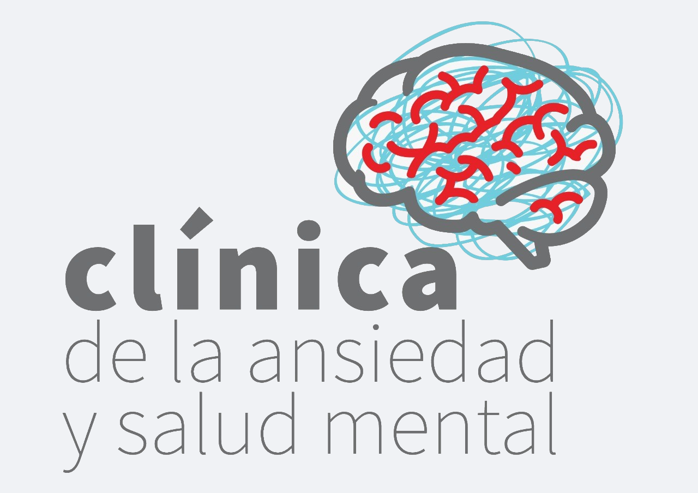

Elaborado por Clínica de la ansiedad y salud mental (CLIANS)
Octubre, 2025
Es un instrumento breve y sencillo, que te ayudará a saber, mediante la indagación de tus deseos de mejorar en ciertos aspectos de tu vida, qué tan necesario es que busques un tratamiento especializado para atender tu salud mental.
Se presentarán una sucesión de 30 enunciados en los que deberás puntuar la intensidad de tus deseos, donde:
Al terminar de responder, se te dará una interpretación de tus resultados que te ayudarán a tomar una decisión respecto a cómo hacerte cargo de tu salud mental, presentándose uno de estos tres resultados:
Al final, se enlistarán una serie de recomendaciones que, por mientras, te ayudarán a trabajar sobre ciertos aspectos que podrían estar afectando tu salud mental.